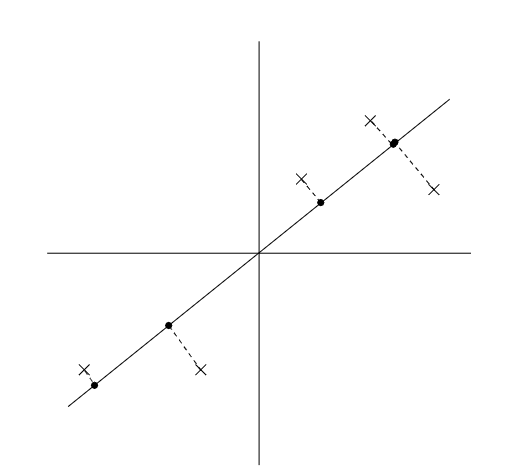

<!DOCTYPE html>


<html lang="zh-CN">


<head>
  <meta name="baidu-site-verification" content="codeva-NSg7ynviLa" />
  <meta charset="utf-8" />
    
  <meta name="viewport" content="width=device-width, initial-scale=1, maximum-scale=1" />
  <title>
    PCA分析公式推导 |  
  </title>
  <meta name="generator" content="hexo-theme-ayer">
  
  <link rel="shortcut icon" href="/images/mojie.jpg" />
  
  
<link rel="stylesheet" href="/dist/main.css">

  <link rel="stylesheet" href="https://cdn.jsdelivr.net/gh/Shen-Yu/cdn/css/remixicon.min.css">
  
<link rel="stylesheet" href="/css/custom.css">

  
  <script src="https://cdn.jsdelivr.net/npm/pace-js@1.0.2/pace.min.js"></script>
  
  

  

<link rel="alternate" href="/atom.xml" title="null" type="application/atom+xml">
</head>

</html>

<body>
  <div id="app">
    
      
    <main class="content on">
      <section class="outer">
  <article
  id="post-PCA分析公式推导"
  class="article article-type-post"
  itemscope
  itemprop="blogPost"
  data-scroll-reveal
>
  <div class="article-inner">
    
    <header class="article-header">
       
<h1 class="article-title sea-center" style="border-left:0" itemprop="name">
  PCA分析公式推导
</h1>
 

    </header>
     
    <div class="article-meta">
      <a href="/posts/fc532062/" class="article-date">
  <time datetime="2021-12-29T14:15:44.000Z" itemprop="datePublished">2021-12-29</time>
</a> 
  <div class="article-category">
    <a class="article-category-link" href="/categories/%E7%90%86%E8%AE%BA%E5%AD%A6%E4%B9%A0/">理论学习</a> / <a class="article-category-link" href="/categories/%E7%90%86%E8%AE%BA%E5%AD%A6%E4%B9%A0/%E6%9C%BA%E5%99%A8%E5%AD%A6%E4%B9%A0/">机器学习</a>
  </div>
  
<div class="word_count">
    <span class="post-time">
        <span class="post-meta-item-icon">
            <i class="ri-quill-pen-line"></i>
            <span class="post-meta-item-text"> 字数统计:</span>
            <span class="post-count">7.3k</span>
        </span>
    </span>

    <span class="post-time">
        &nbsp; | &nbsp;
        <span class="post-meta-item-icon">
            <i class="ri-book-open-line"></i>
            <span class="post-meta-item-text"> 阅读时长≈</span>
            <span class="post-count">34 分钟</span>
        </span>
    </span>
</div>
 
    </div>
      
    <div class="tocbot"></div>


  
    <div class="article-entry" itemprop="articleBody">
       
  <p>吴老师的CS229课程里讲到了PCA分析，但是感觉有些地方不清晰，查阅了一些资料，自己整理了一下。</p>
<span id="more"></span>
<h1 id="特征值分解与奇异值分解">特征值分解与奇异值分解</h1>
<p>首先我们需要了解一些特征值分解与奇异值分解的一些背景知识。</p>
<h2 id="特征值分解">特征值分解</h2>
<h3 id="特征值和特征向量">特征值和特征向量</h3>
<p>矩阵 <span class="math inline">\(A\)</span> 的特征值和特征向量满足关系：
<span class="math display">\[
A x=\lambda x, \quad x \neq 0
\]</span>
我们注意到对于任何特征向量 <span class="math inline">\(x \in \mathbb{C}^{n}\)</span> ，和特征值 <span class="math inline">\(t \in \mathbb{C}\)</span> ，<span class="math inline">\(A(c x)=c A x=c \lambda x=\lambda(c x)\)</span> ，因此 <span class="math inline">\(c x\)</span> 一样是 <span class="math inline">\(A\)</span> 的特征向量。因此，当我们提到与特征值 <span class="math inline">\(\lambda\)</span> 的特征向量 <span class="math inline">\(x\)</span> 时，<strong>我们一般假定特征向量 <span class="math inline">\(x\)</span> 是标准化的</strong>，即 <span class="math inline">\(\|x\| = 1\)</span> 。但是，我们注意到，<span class="math inline">\(x\)</span> 和 <span class="math inline">\(-x\)</span> 都是特征向量，因此我们无法保证特征向量的符号。</p>
<p>我们可以将上式改写为：
<span class="math display">\[
|(\lambda I-A)|=0
\]</span>
方阵 <span class="math inline">\(A \in \mathbb{R}^{n \times n}\)</span> 一定有 <span class="math inline">\(n\)</span> 个特征值（可能是复数）。</p>
<p>特征值和特征向量有以下性质：</p>
<ul>
<li>方阵 <span class="math inline">\(A\)</span> 的迹等于所有特征值之和。</li>
</ul>
<p><span class="math display">\[
\operatorname{tr} A=\sum_{i=1}^{n} \lambda_{i}
\]</span></p>
<p>证明如下：
<span class="math display">\[
\begin{aligned}
\operatorname{tr}(A)
&amp;=\operatorname{tr}\left(Q \Lambda Q^{-1}\right) \quad \because \text { 对协方差矩阵进行特征值分解 } \\
&amp;=\operatorname{tr}\left(Q^{-1} Q \Lambda\right) \\
&amp;=\operatorname{tr}(\Lambda) \\
&amp;=\sum_{i=1}^{n} \lambda_{i}
\end{aligned}
\]</span></p>
<ul>
<li>方阵 <span class="math inline">\(A\)</span> 的行列式等于其所有特征值的乘积（缺证明）</li>
</ul>
<p><span class="math display">\[
|A|=\prod_{i=1}^{n} \lambda_{i}
\]</span></p>
<ul>
<li><p><strong>方阵 <span class="math inline">\(A\)</span> 的秩等于其非零特征值的数目</strong>（缺证明）</p></li>
<li><p>如果 <span class="math inline">\(A\)</span> 非奇异，那么 <span class="math inline">\(1/\lambda\)</span> 和 <span class="math inline">\(x\)</span> 为 <span class="math inline">\(A^{-1}\)</span> 的特征值和特征向量。</p>
<p>证明，对 <span class="math inline">\(Ax = \lambda x\)</span> 左右两项均左乘一个 <span class="math inline">\(A^{-1}\)</span> ，得到
<span class="math display">\[
  A^{-1}A x = A^{-1} \lambda x \\
  (1/\lambda) x = A^{-1}x
  \]</span></p></li>
<li><p>对角矩阵<span class="math inline">\(D=\operatorname{diag}\left(d_{1}, \ldots d_{n}\right)\)</span> 的特征值就是其对角线元素</p>
<p>证明：因为，<span class="math inline">\(Dx = [d_{1}x_{1} \quad d_{2}x_{2} \quad \cdots \quad d_{n}x_{n} ]^{T}\)</span> ， <span class="math inline">\(d_{i}x = [d_{i}x_{1} \quad d_{i}x_{2} \quad \cdots \quad d_{i}x_{n} ]^{T}\)</span> ，那么我们只需要设 <span class="math inline">\(x_{i}\)</span> 为任一非零实数，而其他 <span class="math inline">\(x_{j}\)</span> (<span class="math inline">\(j \neq i\)</span> ) 均为0，那么就满足 <span class="math inline">\(Dx = d_{i}x\)</span> ，即对角线元素 <span class="math inline">\(d_{i}\)</span> 为 <span class="math inline">\(D\)</span> 的特征值。</p></li>
</ul>
<p>我们可以将特征方程写为
<span class="math display">\[
A X=X \Lambda
\]</span>
其中 <span class="math inline">\(X \in \mathbb{R}^{n \times n}\)</span> ，每一列表示一个特征向量，而 <span class="math inline">\(\Lambda\)</span> 为对角矩阵，对角线为特征值，即：
<span class="math display">\[
X \in \mathbb{R}^{n \times n}=\left[\begin{array}{cccc}
\mid &amp; \mid &amp; &amp; \mid \\
x_{1} &amp; x_{2} &amp; \cdots &amp; x_{n} \\
\mid &amp; \mid &amp; &amp; \mid
\end{array}\right], \Lambda=\operatorname{diag}\left(\lambda_{1}, \ldots, \lambda_{n}\right)
\]</span>
证明如下：
<span class="math display">\[
\begin{aligned}A X &amp;=A\left[x_{1}, x_{2}, \ldots, x_{n}\right] \\&amp;=\left[\lambda_{1} x_{1}, \lambda_{2} x_{2}, \ldots, \lambda_{n} x_{n}\right] \\&amp;=\left[x_{1}, x_{2}, \ldots, x_{n}\right] \Lambda \\&amp;=X \Lambda\end{aligned}
\]</span>
如果 <span class="math inline">\(A\)</span> 的特征向量之间<strong>线性无关</strong>，那么 <span class="math inline">\(X\)</span> 可逆，因此存在下式
<span class="math display">\[
A=X \Lambda X^{-1}
\]</span></p>
<p>最后，我们的约束条件是 <span class="math inline">\(A\)</span> 有 <span class="math inline">\(n\)</span>个 线性无关的特征向量，而不是矩阵 <span class="math inline">\(A\)</span> 本身是否满秩，矩阵 <span class="math inline">\(A\)</span> 无论是否满秩都有可能有 <span class="math inline">\(n\)</span> 个线性无关的特征向量。</p>
<h3 id="对称矩阵的特征值和特征向量">对称矩阵的特征值和特征向量</h3>
<p>对称矩阵 <span class="math inline">\(A\)</span> 的特征值和特征向量有两个重要的性质，<strong>首先，对称矩阵所有的特征值均是实数；第二，对称矩阵的特征向量彼此正交</strong>（缺证明）。因此，此时的 <span class="math inline">\(X\)</span> 矩阵为正交矩阵，此时我们定义特征向量的矩阵为 <span class="math inline">\(U\)</span> ，即我们表示对称矩阵 <span class="math inline">\(A\)</span> 为下式
<span class="math display">\[
A=Q \Lambda Q^{-1}=Q \Lambda Q^{T}
\]</span></p>
<p><strong>证明：</strong> <span class="math inline">\(Q^{-1}=Q^{T}\)</span> (其实就是正交矩阵的基本性质)
<span class="math display">\[
\begin{aligned}
&amp;Q^{T} Q=\left[\begin{array}{c}
- q_{1} - \\
- q_{2} - \\
\cdots \\
- q_{n} -
\end{array}\right]\left[\begin{array}{ccc}
| &amp; | &amp; \vdots &amp; | \\
q_{1} &amp; q_{2} &amp; \vdots &amp; q_{n} \\
| &amp; | &amp; \vdots &amp; |
\end{array}\right]\\
&amp;=\left[\begin{array}{cccc}
q_{1}^{T} q_{1} &amp; q_{1}^{T} q_{2} &amp; \cdots &amp; q_{1}^{T} q_{n} \\
q_{2}^{T} q_{1} &amp; q_{2}^{T} q_{2} &amp; \cdots &amp; q_{2}^{T} q_{n} \\
\cdots &amp; \cdots &amp; \cdots &amp; \cdots \\
q_{n}^{T} q_{1} &amp; q_{n}^{T} q_{2} &amp; \cdots &amp; q_{n}^{T} q_{n}
\end{array}\right]\\
\\
&amp;=I \quad \because 对角线为模长度，非对角线根据特征向量两两正交的性质均为0\ 
\end{aligned}
\]</span></p>
<p>此时，我们可以表示二次型为
<span class="math display">\[
x^{T} A x=x^{T} U \Lambda U^{T} x=y^{T} \Lambda y=\sum_{i=1}^{n} \lambda_{i} y_{i}^{2}
\]</span>
其中 <span class="math inline">\(y=U^{T} x\)</span> 。</p>
<p>因为 $y_{i}^{2}  $， 因此，二次型的符号完全由特征值 <span class="math inline">\(\lambda_{i}\)</span> 决定。如果所有的特征值均满足 <span class="math inline">\(\lambda_{i} &gt; 0\)</span> ，那么这个矩阵便是正定矩阵；如果所有的特征值 <span class="math inline">\(\lambda_{i} \geq 0\)</span> （也就是存在特征值为0），那么这个矩阵就是半正定矩阵。相似地，如果所有的特征值满足 <span class="math inline">\(\lambda_{i}&lt;0\)</span> 或 <span class="math inline">\(\lambda_{i} \leq 0\)</span> ，此时矩阵 <span class="math inline">\(A\)</span> 就是一个负定或半负定矩阵。如果矩阵 <span class="math inline">\(A\)</span> 同时有正数和负数的特征值，说明 <span class="math inline">\(A\)</span> 为不定矩阵</p>
<h2 id="奇异值分解">奇异值分解</h2>
<p>下面这段话全部来自于别人的文章[3]</p>
<p>当给定一个大小为 <span class="math inline">\(m \times n\)</span> 的矩阵 <span class="math inline">\(A\)</span> ，虽然矩阵 <span class="math inline">\(A\)</span> 不一定是方阵，但大小为 <span class="math inline">\(m \times m\)</span> 的 <span class="math inline">\(A A^{T}\)</span> 和 <span class="math inline">\(n \times n\)</span> 的 <span class="math inline">\(A^{T} A\)</span> 却是对称矩阵，可以进行特征值分解。若 <span class="math inline">\(A A^{T}=P \Lambda_{1} P^{T}\)</span> ， <span class="math inline">\(A^{T} A=Q \Lambda_{2} Q^{T}\)</span> 则矩阵 <span class="math inline">\(A\)</span> 的奇异值分解为
<span class="math display">\[
A=P \Sigma Q^{T}
\]</span>
满足
<span class="math display">\[
P^{T} = P^{-1}\\
Q^{T} = Q^{-1}\\
\]</span>
其中，矩阵 <span class="math inline">\(P=\left(\vec{p}_{1}, \vec{p}_{2}, \ldots, \vec{p}_{m}\right)\)</span> 的大小为 <span class="math inline">\(m \times m\)</span> ，列向量 <span class="math inline">\(\vec{p}_{1}, \vec{p}_{2}, \ldots, \vec{p}_{m}\)</span> 是 <span class="math inline">\(A A^{T}\)</span> 的特征向量，也 被称为矩阵 <span class="math inline">\(A\)</span> 的左奇异向量 (left singular vector) ; 矩阵 <span class="math inline">\(Q=\left(\vec{q}_{1}, \vec{q}_{2}, \ldots, \vec{q}_{n}\right)\)</span> 的大小为 <span class="math inline">\(n \times n\)</span> ， 列向量 <span class="math inline">\(\vec{q}_{1}, \vec{q}_{2}, \ldots, \vec{q}_{n}\)</span> 是 <span class="math inline">\(A^{T} A\)</span> 的特征向量，也被称为矩阵 <span class="math inline">\(A\)</span> 的右奇异向量 (right singular vector) ; 矩阵 <span class="math inline">\(\Lambda_{1}\)</span> 大小为 <span class="math inline">\(m \times m\)</span> ，矩阵 <span class="math inline">\(\Lambda_{2}\)</span> 大小为 <span class="math inline">\(n \times n\)</span> ，两个矩阵对角线上的非零元素相同 (即矩阵 <span class="math inline">\(A A^{T}\)</span> 和矩阵 <span class="math inline">\(A^{T} A\)</span> 的非零特征值相同，推导过程见下) ; 矩阵 <span class="math inline">\(\Sigma\)</span> 的大小为 <span class="math inline">\(m \times n\)</span> ，位 于对角线上的元素被称为奇异值 (singular value)。</p>
<p>接下来，我们来看看矩阵 <span class="math inline">\(\Sigma\)</span> 与矩阵 <span class="math inline">\(A A^{T}\)</span> 和矩阵 <span class="math inline">\(A^{T} A\)</span> 的关系。令常数 <span class="math inline">\(k\)</span> 是矩阵 <span class="math inline">\(A\)</span> 的秩，则 <span class="math inline">\(k \leq \min (m, n)\)</span> ，当 <span class="math inline">\(m \neq n\)</span> 时，很明显，矩阵 <span class="math inline">\(\Lambda_{1}\)</span> 和矩阵 <span class="math inline">\(\Lambda_{2}\)</span> 的大小不同，但矩阵 <span class="math inline">\(\Lambda_{1}\)</span> 和矩阵 <span class="math inline">\(\Lambda_{2}\)</span> 对 角线上的非零元素却是相同的，若将矩阵 <span class="math inline">\(\Lambda_{1}\)</span> (或矩阵 <span class="math inline">\(\Lambda_{2}\)</span> ) 对角线上的非零元素分别为 <span class="math inline">\(\lambda_{1}, \lambda_{2}, \ldots, \lambda_{k}\)</span> （因为 <span class="math inline">\(\operatorname{rank}\left(\boldsymbol{A} \boldsymbol{A}^{\mathrm{T}}\right)=\operatorname{rank}\left(\boldsymbol{A}^{\mathrm{T}} \boldsymbol{A}\right)=\operatorname{rank}(\boldsymbol{A})\)</span> ），其中，这些特征值也都是非负的（需证明 <span class="math inline">\(AA^T\)</span> 和 <span class="math inline">\(A^TA\)</span> 是半正定的，见下），再令矩阵 <span class="math inline">\(\ Sigma\)</span> 对角线上的非零元素分别为 <span class="math inline">\(\sigma_{1}, \sigma_{2}, \ldots, \sigma_{k}\)</span> ，则
<span class="math display">\[
\sigma_{1}=\sqrt{\lambda_{1}}, \sigma_{2}=\sqrt{\lambda_{2}}, \ldots, \sigma_{k}=\sqrt{\lambda_{k}}
\]</span>
即非零奇异值的平方对应着矩阵 <span class="math inline">\(\Lambda_{1}\)</span> (或矩阵 <span class="math inline">\(\Lambda_{2}\)</span> ) 的非零特征值，到这里，我们就不难看出奇异值分解与对称对角化分解（特征分解）的关系了，即我们可以由对称对角化分解得到我们想要的奇异值分解。
为了便于理解，在这里，给定一个大小为 <span class="math inline">\(2 \times 2\)</span> 的矩阵 <span class="math inline">\(A=\left[\begin{array}{cc}4 &amp; 4 \\ -3 &amp; 3\end{array}\right]\)</span> ，虽然这个矩阵是方阵，但 却不是对称矩阵，我们来看看它的奇异值分解是怎样的。
由 <span class="math inline">\(A A^{T}=\left[\begin{array}{cc}32 &amp; 0 \\ 0 &amp; 18\end{array}\right]\)</span> 进行对称对角化分解，得到特征值为 <span class="math inline">\(\lambda_{1}=32 ， \lambda_{2}=18\)</span> ，相应地，特征向量 为 <span class="math inline">\(\vec{p}_{1}=(1,0)^{T} ， \vec{p}_{2}=(0,1)^{T}\)</span>; 由 <span class="math inline">\(A^{T} A=\left[\begin{array}{cc}25 &amp; 7 \\ 7 &amp; 25\end{array}\right]\)</span> 进行对称对角化分解，得到特征值为 <span class="math inline">\(\lambda_{1}=32 ， \lambda_{2}=18 ，\)</span> 相应地，特征向量为 <span class="math inline">\(\vec{q}_{1}=\left(\frac{\sqrt{2}}{2}, \frac{\sqrt{2}}{2}\right)^{T} ， \vec{q}_{2}=\left(-\frac{\sqrt{2}}{2}, \frac{\sqrt{2}}{2}\right)^{T}\)</span> 。取 <span class="math inline">\(\Sigma=\left[\begin{array}{cc}4 \sqrt{2} &amp; 0 \\ 0 &amp; 3 \sqrt{2}\end{array}\right]\)</span> ，则矩阵 <span class="math inline">\(A\)</span> 的奇异值分解为
<span class="math display">\[
\begin{aligned}
&amp;A=P \Sigma Q^{T}=\left(\vec{p}_{1}, \vec{p}_{2}\right) \Sigma\left(\vec{q}_{1}, \vec{q}_{2}\right)^{T} \\
&amp;=\left[\begin{array}{ll}
1 &amp; 0 \\
0 &amp; 1
\end{array}\right]\left[\begin{array}{cc}
4 \sqrt{2} &amp; 0 \\
0 &amp; 3 \sqrt{2}
\end{array}\right]\left[\begin{array}{cc}
\frac{\sqrt{2}}{2} &amp; \frac{\sqrt{2}}{2} \\
-\frac{\sqrt{2}}{2} &amp; \frac{\sqrt{2}}{2}
\end{array}\right]=\left[\begin{array}{cc}
4 &amp; 4 \\
-3 &amp; 3
\end{array}\right]
\end{aligned}
\]</span></p>
<p>如果 <span class="math inline">\(A\)</span> 是一个<strong>对称方阵</strong>，则 <span class="math inline">\(AA^T=A^TA\)</span> ，此时左奇异向量和右奇异向量构成的矩阵也是相等的，即 <span class="math inline">\(P=Q\)</span> 。更为神奇的是，<strong>对称方阵的奇异值分解与特征分解结果相同</strong>，证明见下。</p>
<h3 id="证明矩阵-a-at-和矩阵-at-a-的非零特征值相同">证明：矩阵 <span class="math inline">\(A A^{T}\)</span> 和矩阵 <span class="math inline">\(A^{T} A\)</span> 的非零特征值相同</h3>
<p>下面这段话来自网络[4]</p>
<blockquote>
<p>For any <span class="math inline">\(m \times n\)</span> and <span class="math inline">\(n \times m\)</span> matrices <span class="math inline">\(A\)</span> and <span class="math inline">\(B\)</span>, the nonzero eigenvalues of <span class="math inline">\(A B\)</span> and <span class="math inline">\(B A\)</span> are the same. Namely, if <span class="math inline">\(A B v=\lambda v\)</span> with <span class="math inline">\(\lambda \neq 0\)</span> and <span class="math inline">\(v \neq 0\)</span>, then <span class="math inline">\(B v \neq 0\)</span> （因为 <span class="math inline">\(A B v=\lambda v \neq 0\)</span> ，如果 <span class="math inline">\(B v = 0\)</span>，则 <span class="math inline">\(ABv = 0\)</span>，与原条件相悖，因此 <span class="math inline">\(B v \neq 0\)</span> ）and <span class="math inline">\(B A(B v)=B(A B v)=\lambda B v\)</span> ，即 <span class="math inline">\(\lambda\)</span> 同样为 <span class="math inline">\(BA\)</span> 的特征值，因此 <span class="math inline">\(AB\)</span> 和 <span class="math inline">\(BA\)</span> 的非零特征值相同。</p>
</blockquote>
<h3 id="证明矩阵-a-at-和矩阵-at-a-半正定">证明：矩阵 <span class="math inline">\(A A^{T}\)</span> 和矩阵 <span class="math inline">\(A^{T} A\)</span> 半正定</h3>
<p>首先，证明 <span class="math inline">\(A^{T} A\)</span> 半正定 ，证明如下：
<span class="math display">\[
x^{T}\left(A^{T} A\right) x=\left(x^{T} A^{T}\right)(A x)=(A x)^{T}(A x) \geq 0
\]</span>
同理，可证 <span class="math inline">\(A A^{T}\)</span> 半正定。</p>
<h3 id="证明对称方阵的奇异值分解与特征分解结果相同">证明：对称方阵的奇异值分解与特征分解结果相同</h3>
<p>当 <span class="math inline">\(A\)</span> 为对称方阵时，<span class="math inline">\(AA^T=A^TA = A^2\)</span> 。</p>
<p>假设 <span class="math inline">\(\lambda\)</span> 和 <span class="math inline">\(u\)</span> 为 <span class="math inline">\(A\)</span> 的一个特征值和相应的特征方程，此时存在：
<span class="math display">\[
\begin{aligned}
&amp;A^{2} u \\
&amp;=A(Au) \\
&amp;=A(\lambda u) \\
&amp;=\lambda A u \\
&amp;=\lambda^2 u \\ 
\end{aligned}
\]</span>
因此， <span class="math inline">\(\lambda^2\)</span> 和 <span class="math inline">\(u\)</span> 为 <span class="math inline">\(A^2\)</span> 的特征值和特征向量。</p>
<p>因此，此时，<span class="math inline">\(P, Q\)</span> 为特征分解的特征向量矩阵，而 <span class="math inline">\(\Sigma\)</span> 为特征值组成的对角矩阵。也就是说，对称方阵的奇异值分解与特征分解结果相同</p>
<h1 id="pca-预处理">PCA 预处理</h1>
<p>在使用PCA分析前，我们需要先进行<strong>特征缩放</strong>。</p>
<blockquote>
<ol type="1">
<li>Let <span class="math inline">\(\mu=\frac{1}{m} \sum_{i=1}^{m} x^{(i)}\)</span>.</li>
<li>Replace each <span class="math inline">\(x^{(i)}\)</span> with <span class="math inline">\(x^{(i)}-\mu\)</span>.</li>
<li>Let <span class="math inline">\(\sigma_{j}^{2}=\frac{1}{m} \sum_{i}\left(x_{j}^{(i)}\right)^{2}\)</span></li>
<li>Replace each <span class="math inline">\(x_{j}^{(i)}\)</span> with <span class="math inline">\(x_{j}^{(i)} / \sigma_{j}\)</span>.</li>
</ol>
</blockquote>
<p>前两步将均值改为 0，后两步将方差均调整为1，使得不同特征具有相同的取值范围 ( “scale”) 。如果你的特征本身就已经是范围一致，那就不用进行后两步，举个例子，假如你的输入特征是图像像素的灰度，那么你的特征取值都是 <span class="math inline">\(\{0,1, \ldots, 255\}\)</span> ，那么就不需要对范围做处理。</p>
<h1 id="pca-直观解释">PCA 直观解释</h1>
<p>吴老师说 PCA 分析结果可以有八九种解释的方式，但是我知道的只有两种。</p>
<p>第一种解释方式是找到一个超平面，使得样本点在这个超平面上尽可能分开，也就是投影点的方差尽可能大。如下图，叉形点是二维空间的样本点，我们想找到某个单位向量 <span class="math inline">\(u\)</span> ，使得数据投影到 <span class="math inline">\(u\)</span> 方向的点的方差最大化。</p>
<p>第二种解释是我们希望所有的样本到这个超平面的距离足够近（所有样本点到超平面距离的平方和最小），对应着下图的虚线。</p>
<p></p>
<h1 id="推导第一主成分的方向">推导第一主成分的方向</h1>
<p>这里就是说，如果我们就像上面图中一样，找一个单位向量 <span class="math inline">\(u\)</span> 构成的一条直线方向，使得 数据投影到 <span class="math inline">\(u\)</span> 方向的点的方差最大化。这里设样本数为 <span class="math inline">\(m\)</span> ，特征数为 <span class="math inline">\(n\)</span>，我们知道给定一个单位向量 <span class="math inline">\(u\)</span> 和某个点 <span class="math inline">\(x\)</span> ，<span class="math inline">\(x\)</span> 投射到 <span class="math inline">\(u\)</span> 上投影点的长度为 <span class="math inline">\(x^{T}u\)</span> （内积的性质）。我们上面提到了最大化投影点的方差，因此，我们需要最大化下式[5]：
<span class="math display">\[
\begin{aligned}
&amp;\max\frac{1}{m} \sum_{i=1}^{m}\left(x^{(i)^{T}} u\right)^{2} \\
&amp;=\frac{1}{m} \sum_{i=1}^{m} (u^{T} x^{(i)}) (x^{(i)^{T}} u) \\
&amp;=\frac{1}{m} \sum_{i=1}^{m} u^{T} x^{(i)} x^{(i)^{T}} u \\
&amp;=u^{T}\left(\frac{1}{m} \sum_{i=1}^{m} x^{(i)} x^{(i)^{T}}\right) u \\
\\
&amp; s.t. \quad \|\mu\|_{2} = 1
\end{aligned}
\]</span>
这里，一个隐含的性质是，投影的点的均值也为 <span class="math inline">\(\boldsymbol{0}\)</span> ，证明如下：
<span class="math display">\[
\begin{aligned}
&amp;\frac{1}{m} \sum_{i=1}^{m}\left(x^{(i)^{T}} u\right) \\
&amp;=\frac{1}{m} \sum_{i=1}^{m}\left(x^{(i)^{T}} \right) u \\
&amp;= 0u \quad \because x进行了中心化， 均值为 0\\
&amp;=0
\end{aligned}
\]</span>
我们发现这个解为 <span class="math inline">\(x\)</span> 的协方差矩阵 <span class="math inline">\(\Sigma=\frac{1}{m} \sum_{i=1}^{m} x^{(i)}{x}^{(i)^{T}}\)</span> 的 <strong>主特征值(principal eigenvector)</strong> （特征值中模最大的特征值称为主特征值，相应的特征向量称为主特征向量）。</p>
<p><strong>证明</strong>：我们可以通过构建拉格朗日乘子式来求解上面的问题：
<span class="math display">\[
\begin{aligned}
L(u, \lambda) &amp;=u^{T} \Sigma u-\lambda\left(u^{T} u-1\right) \\
&amp;=u^{T} \Sigma u-\lambda\left(u^{T} I u-1\right) \\
\nabla_{u} L &amp;=\left(\Sigma+\Sigma^{T}\right) u-\lambda\left(I+I^{T}\right) u \quad \because \frac{\partial\left(\boldsymbol{X}^{\mathrm{T}} \boldsymbol{A} \boldsymbol{X}\right)}{\partial \boldsymbol{X}}=\left(\boldsymbol{A}+\boldsymbol{A}^{\mathrm{T}}\right) \boldsymbol{X} \\
&amp;=2(\Sigma u-\lambda u) \\
\end{aligned}
\]</span>
因此，下式成立，即 $u
$ 和 <span class="math inline">\(\lambda\)</span> 分别为 <span class="math inline">\(\Sigma\)</span> 的特征向量和特征值。
<span class="math display">\[
\Sigma u=\lambda u
\]</span>
代入原式，得到我们要找的特征向量 <span class="math inline">\(u\)</span> 就是<strong>主特征向量</strong>。
<span class="math display">\[
\begin{aligned}
&amp;\operatorname{max}\left(u^{T} \Sigma u\right) &amp; \\
=&amp; \max \left(u^{T} \lambda u\right) \\
=&amp; \max (\lambda)
\end{aligned}
\]</span>
于是，我们得到投影数据最佳的一维子空间，也就是第一主成分。</p>
<p>下面，我们将其一般化，推导 PCA 前 <span class="math inline">\(n&#39;\)</span>个主成分 。</p>
<h1 id="pca一般推导">PCA一般推导</h1>
<p>推导过程主要来自于西瓜书和南瓜书[6][7]。</p>
<h2 id="最小投影距离">最小投影距离</h2>
<p>假设 <span class="math inline">\(\mathrm{m}\)</span> 个 <span class="math inline">\(\mathrm{n}\)</span> 维数据 <span class="math inline">\(\{x^{(1)}, x^{(2)}, \ldots, x^{(m)}\}\)</span> 都已经进行了中心化，即 <span class="math inline">\(\sum_{i=1}^{m} x^{(i)}=0\)</span> 。经过投影变换后得到的新坐标系为 <span class="math inline">\(\left\{w_{1}, w_{2}, \ldots, w_{n}\right\}\)</span>, 其中 <span class="math inline">\(w_{i}\)</span> 是标准正交基向量 (<span class="math inline">\(n \times 1\)</span> 维向量)，即 <span class="math inline">\(\|w_{i}\|_{2}=1, w_{i}^{T} w_{j}=0\)</span> 。</p>
<p>如果我们将数据从 <span class="math inline">\(n\)</span> 维降到 <span class="math inline">\(n^{\prime}\)</span> 维，即丟弃新坐标系中的部分坐标，则新的坐标系为 <span class="math inline">\(\left\{w_{1}, w_{2}, \ldots, w_{n^{\prime}}\right\}\)</span>。样本点 <span class="math inline">\(x^{(i)}\)</span> 在 <span class="math inline">\(n^{\prime}\)</span> 维坐标系中的投影为: <span class="math inline">\(z^{(i)}=\left(z_{1}^{(i)}, z_{2}^{(i)}, \ldots, z_{n^{\prime}}^{(i)}\right)^{T}\)</span>. 其中， <span class="math inline">\(z_{j}^{(i)}=w_{j}^{T} x^{(i)}\)</span> 是 <span class="math inline">\(x^{(i)}\)</span> 在低维坐标系里第 <span class="math inline">\(j\)</span> 维的坐标。</p>
<p>如果我们用 <span class="math inline">\(z^{(i)}\)</span> 来恢复原始数据 <span class="math inline">\(x^{(i)}\)</span>, 则得到的恢复数据 <span class="math inline">\(\hat{x}^{(i)}=\sum_{j=1}^{n^{\prime}} z_{j}^{(i)} w_{j}=W z^{(i)}\)</span>, 其中， <strong><span class="math inline">\(W\)</span> 为标准正交基组成的 <span class="math inline">\(n \times n&#39;\)</span> 矩阵</strong>。
<span class="math display">\[
W = \left[\begin{array}{ccc}
| &amp; | &amp; \vdots &amp; | \\
w_{1} &amp; w_{2} &amp; \vdots &amp; w_{n&#39;} \\
| &amp; | &amp; \vdots &amp; |
\end{array}\right]\\
\]</span>
带入上式，易知，<span class="math inline">\(z^{(i)}=W^{T} x^{(i)}\)</span> 。并且存在，<span class="math inline">\(W^TW=I\)</span> ，证明如下：</p>
<p><span class="math display">\[
\begin{aligned}
&amp;W^{T} W=\left[\begin{array}{c}
- w_{1} - \\
- w_{2} - \\
\cdots \\
- w_{n&#39;} -
\end{array}\right]\left[\begin{array}{ccc}
| &amp; | &amp; \vdots &amp; | \\
w_{1} &amp; w_{2} &amp; \vdots &amp; w_{n&#39;} \\
| &amp; | &amp; \vdots &amp; |
\end{array}\right]\\
&amp;=\left[\begin{array}{cccc}
w_{1} \cdot w_{1} &amp; w_{1} \cdot w_{2} &amp; \cdots &amp; w_{1} \cdot w_{n&#39;} \\
w_{2} \cdot w_{1} &amp; w_{2} \cdot w_{2} &amp; \cdots &amp; w_{2} \cdot w_{n&#39;} \\
\cdots &amp; \cdots &amp; \cdots &amp; \cdots \\
w_{n&#39;} \cdot w_{1} &amp; w_{n&#39;}\cdot w_{2} &amp; \cdots &amp; w_{n&#39;} \cdot w_{n&#39;}
\end{array}\right]\\
\\
&amp;=I \quad \because 对角线为模长度，非对角线根据特征向量两两正交的性质均为0\ 
\end{aligned}
\]</span>
现在我们考虑整个样本集，我们莃望所有的样本到这个超平面的距离足够近，即最小化下式:
<span class="math display">\[
\sum_{i=1}^{m}\left\|\hat{x}^{(i)}-x^{(i)}\right\|_{2}^{2}
\]</span>
将这个式子进行整理，可以得到:
<span class="math display">\[
\begin{aligned}
\sum_{i=1}^{m}\left\|\hat{x}^{(i)}-x^{(i)}\right\|_{2}^{2} &amp;=\sum_{i=1}^{m}\left\|W z^{(i)}-x^{(i)}\right\|_{2}^{2} \\
&amp;=\sum_{i=1}^{m}\left(\mathbf{W} \boldsymbol{z}^{(i)}-\boldsymbol{x}^{(i)}\right)^{\mathrm{T}}\left(\mathbf{W} \boldsymbol{z}^{(i)}-\boldsymbol{x}^{(i)}\right) \\
&amp;=\sum_{i=1}^{m}\left(\boldsymbol{z}^{(i)T} \mathbf{W}^{\mathrm{T}} \mathbf{W} \boldsymbol{z}^{(i)}-\boldsymbol{z}^{(i)T} \mathbf{W}^{\mathrm{T}} \boldsymbol{x}^{(i)}-\boldsymbol{x}^{(i)T} \mathbf{W} \boldsymbol{z}^{(i)}+\boldsymbol{x}^{(i)T} \boldsymbol{x}^{(i)}\right) \\
&amp;=\sum_{i=1}^{m}\left(\boldsymbol{z}^{(i)T} \boldsymbol{z}^{(i)}-2 \boldsymbol{z}^{(i)T} \mathbf{W}^{\mathrm{T}} \boldsymbol{x}^{(i)}+\boldsymbol{x}^{(i)T} \boldsymbol{x}^{(i)}\right) \quad \because \boldsymbol{z}^{(i)T} \mathbf{W}^{\mathrm{T}} \boldsymbol{x}^{(i)} \text{ 和 } \boldsymbol{x}^{(i)T} \mathbf{W} \boldsymbol{z}^{(i)} 互为转置且为标量，因此二者相等\\
&amp;=\sum_{i=1}^{m} z^{(i) T} z^{(i)}-2 \sum_{i=1}^{m} z^{(i) T} z^{(i)}+\sum_{i=1}^{m} x^{(i) T} x^{(i)} \\
&amp;=-\sum_{i=1}^{m} z^{(i) T} z^{(i)}+\sum_{i=1}^{m} x^{(i) T} x^{(i)} \\
&amp;=-\sum_{i=1}^{m} \operatorname{tr} \left(z^{(i)} z^{(i) T}\right)+\sum_{i=1}^{m} x^{(i) T} x^{(i)} \quad \because \operatorname{tr} \left(z^{(i)} z^{(i) T}\right) = z^{(i) T} z^{(i)}\\
&amp;=- \operatorname{tr} \left(\sum_{i=1}^{m} z^{(i)} z^{(i) T}\right)+\sum_{i=1}^{m} x^{(i) T} x^{(i)} \\
&amp;=- \operatorname{tr} \left(\sum_{i=1}^{m} W^{T} x^{(i)} x^{(i)T} W  \right)+\sum_{i=1}^{m} x^{(i) T} x^{(i)} \\
&amp;=-\operatorname{tr}\left(W^{T}\left(\sum_{i=1}^{m} x^{(i)} x^{(i) T}\right) W\right)+\sum_{i=1}^{m} x^{(i) T} x^{(i)} \\
&amp;=-\operatorname{tr}\left(W^{T} X^{T} X W\right)+\sum_{i=1}^{m} x^{(i) T} x^{(i)}
\end{aligned}
\]</span>
注意到 <span class="math inline">\(\sum_{i=1}^{m} x^{(i)} x^{(i) T}\)</span> 是数据集的协方差矩阵（从协方差矩阵准取定义看，这个公式少了 <span class="math inline">\(1/m\)</span> ，但是对我们这里推导无影响，下同），可以写成<strong>设计矩阵</strong>的格式（行是样本，列是特征，因此 <strong><span class="math inline">\(X\)</span> 是一个 <span class="math inline">\(m \times n\)</span> 的矩阵</strong>）。而 <span class="math inline">\(\sum_{i=1}^{m} x^{(i) T} x^{(i)}\)</span> 是一个常量。</p>
<p>最小化上式等价于:
<span class="math display">\[
\underbrace{\arg \min }_{W}-\operatorname{tr}\left(W^{T} X^{T} X W\right) \\ \text { s.t. } W^{T} W=I
\]</span></p>
<p>构建拉格朗日函数如下[8][9] ，这里拉格朗日乘子矩阵 <span class="math inline">\(\Theta\)</span> 是 <span class="math inline">\(n&#39; \times n&#39;\)</span> 的矩阵，与约束条件维度相同
<span class="math display">\[
\begin{aligned}
L(\mathbf{W}, \Theta) &amp;=-\operatorname{tr}\left(\mathbf{W}^{\mathrm{T}} \mathbf{X}^{\mathrm{T}} \mathbf{X} \mathbf{W}\right)+\left\langle\Theta, \mathbf{W}^{\mathrm{T}} \mathbf{W}-\mathbf{I}\right\rangle \quad \because 这里是两个矩阵的内积，等于两个矩阵相同位置元素乘积之和，可用迹函数表示\\
&amp;=-\operatorname{tr}\left(\mathbf{W}^{\mathrm{T}} \mathbf{X}^{\mathrm{T}} \mathbf{X} \mathbf{W}\right)+\operatorname{tr}\left(\Theta^{\mathrm{T}}\left(\mathbf{W}^{\mathrm{T}} \mathbf{W}-\mathbf{I}\right)\right)
\end{aligned}
\]</span></p>
<p>若此时仅考虑约束 <span class="math inline">\(w_{i}^{\mathrm{T}} w_{i}=1\)</span> ，即只考虑 <span class="math inline">\(W^TW\)</span> 的对角线元素的约束，此时拉格朗日乘子矩阵 <span class="math inline">\(\Theta\)</span> 为<strong>对角矩阵</strong>，令新的拉格朗日乘子矩阵为 <span class="math inline">\(\Lambda=\operatorname{diag}\left(\lambda_{1}, \lambda_{2}, \ldots, \lambda_{n^{\prime}}\right)\)</span> , 此时的拉格朗日函数为
<span class="math display">\[
L(\mathbf{W}, \Lambda)=-\operatorname{tr}\left(\mathbf{W}^{\mathrm{T}} \mathbf{X}^{\mathrm{T}} \mathbf{X} \mathbf{W}\right)+\operatorname{tr}\left(\Lambda^{\mathrm{T}}\left(\mathbf{W}^{\mathrm{T}} \mathbf{W}-\mathbf{I}\right)\right)
\]</span>
对拉格朗日函数关于 <span class="math inline">\(\mathbf{W}\)</span> 求导可得
<span class="math display">\[
\begin{aligned}
\frac{\partial L(\mathbf{W}, \Lambda)}{\partial \mathbf{W}} &amp;=\frac{\partial}{\partial \mathbf{W}}\left[-\operatorname{tr}\left(\mathbf{W}^{\mathrm{T}} \mathbf{X}^{\mathrm{T}} \mathbf{X} \mathbf{W}\right)+\operatorname{tr}\left(\Lambda^{\mathrm{T}}\left(\mathbf{W}^{\mathrm{T}} \mathbf{W}-\mathbf{I}\right)\right)\right] \\
&amp;=-\frac{\partial}{\partial \mathbf{W}} \operatorname{tr}\left(\mathbf{W}^{\mathrm{T}} \mathbf{X}^{\mathrm{T}} \mathbf{X} \mathbf{W}\right)+\frac{\partial}{\partial \mathbf{W}} \operatorname{tr}\left(\Lambda^{\mathrm{T}}\left(\mathbf{W}^{\mathrm{T}} \mathbf{W}-\mathbf{I}\right)\right)
\end{aligned}
\]</span>
由矩阵微分公式 <span class="math inline">\(\frac{\partial}{\partial \mathbf{X}} \operatorname{tr}\left(\mathbf{X}^{\mathrm{T}} \mathbf{B} \mathbf{X}\right)=\mathbf{B} \mathbf{X}+\mathbf{B}^{\mathrm{T}} \mathbf{X}, \frac{\partial}{\partial \mathbf{X}} \operatorname{tr}\left(\mathbf{B X}^{\mathrm{T}} \mathbf{X}\right)=\mathbf{X B}^{\mathrm{T}}+\mathbf{X B}\)</span> 可得
<span class="math display">\[
\begin{aligned}
\frac{\partial L(\mathbf{W}, \Lambda)}{\partial \mathbf{W}} &amp;=-2 \mathbf{X}^{\mathrm{T}} \mathbf{X} \mathbf{W}+\mathbf{W} \Lambda+\mathbf{W} \Lambda^{\mathrm{T}} \\
&amp;=-2 \mathbf{X}^{\mathrm{T}} \mathbf{X} \mathbf{W}+\mathbf{W}\left(\Lambda+\Lambda^{\mathrm{T}}\right) \\
&amp;=-2 \mathbf{X}^{\mathrm{T}} \mathbf{X} \mathbf{W}+2 \mathbf{W} \Lambda
\end{aligned}
\]</span>
令 <span class="math inline">\(\frac{\partial L(\mathbf{W}, \Lambda)}{\partial \mathbf{W}}=0\)</span> 可得
<span class="math display">\[
\begin{aligned}
-2 \mathbf{X}^{\mathrm{T}} \mathbf{X} \mathbf{W}+2 \mathbf{W} \Lambda &amp;=\mathbf{0} \\
\mathbf{X}^{\mathrm{T}} \mathbf{X} \mathbf{W} &amp;=\mathbf{W} \Lambda
\end{aligned}
\]</span>
将 <span class="math inline">\(\mathrm{W}\)</span> 和 <span class="math inline">\(\Lambda\)</span> 展开可得
<span class="math display">\[
\mathbf{X}^{\mathrm{T}} \mathbf{X}\boldsymbol{w}_{i}=\lambda_{i} \boldsymbol{w}_{i}, \quad i=1,2, \ldots, n^{\prime}
\]</span></p>
<blockquote>
<p>显然, 此式为矩阵特征值和特征向量的定义式, 其中 <span class="math inline">\(\lambda_{i}, w_{i}\)</span> 分别表示矩阵 <span class="math inline">\(\mathbf{X}^{\mathrm{T}} \mathbf{X}\)</span> 的特征值和单位特征向量。由于以上是仅考虑约束 <span class="math inline">\(w_{i}^{\mathrm{T}} w_{i}=1\)</span> 所求得的结果, 而 <span class="math inline">\(w_{i}\)</span> 还需满足约束 <span class="math inline">\(w_{i}^{\mathrm{T}} \boldsymbol{w}_{j}=0(i \neq j)\)</span> 。观察 <span class="math inline">\(\mathbf{X}^{\mathrm{T}} \mathbf{X}\)</span> 的定义可知, <span class="math inline">\(\mathbf{X}^{\mathrm{T}} \mathbf{X}\)</span> 是一个实对称矩阵, 实对称矩阵的不同特征值所对应的特征向量之间相互正交, <strong>同一 特征值的不同特征向量可以通过施密特正交化使其变得正交</strong>, 所以通过上式求得的 <span class="math inline">\(w_{i}\)</span> 可以同时满足约束 <span class="math inline">\(\boldsymbol{w}_{i}^{\mathrm{T}} \boldsymbol{w}_{i}=1, \boldsymbol{w}_{i}^{\mathrm{T}} \boldsymbol{w}_{j}=0(i \neq j)\)</span> 。根据拉格朗日乘子法的原理可知, 此时求得的结果仅是最优解的必要条件, 而且 <span class="math inline">\(\mathbf{X}^{\mathrm{T}} \mathbf{X}\)</span> 有 <span class="math inline">\(n\)</span> 个相互正交的单位特征向量, 所以还需要从这 <span class="math inline">\(n\)</span> 个特征向量里找出 <span class="math inline">\(n^{\prime}\)</span> 个能使得目标函数 达到最优值的特征向量作为最优解。将 <span class="math inline">\(\mathbf{X}^{\mathrm{T}} \mathbf{X} W= W \Lambda\)</span> 代人目标函数可得[9]</p>
</blockquote>
<p><span class="math display">\[
\begin{aligned}
\min _{\mathrm{W}}-\operatorname{tr}\left(\mathbf{W}^{\mathrm{T}} \mathbf{X}^{\mathrm{T}} \mathbf{X} \mathbf{W}\right) &amp;=\max _{\mathbf{W}} \operatorname{tr}\left(\mathbf{W}^{\mathrm{T}} \mathbf{X}^{\mathrm{T}} \mathbf{X} \mathbf{W}\right) \\
&amp;=\max _{\mathbf{W}} \operatorname{tr}\left(\mathbf{W}^{\mathrm{T}} \mathbf{W} \Lambda \right) \\
&amp;=\max _{\mathbf{W}} \operatorname{tr}\left( \Lambda \right)  \quad \because \mathbf{W}^{\mathrm{T}} \mathbf{W} = \mathbf{I}  \\
&amp;=\max _{\mathbf{W}} \sum_{i=1}^{n^{\prime}} \lambda_{i}
\end{aligned}
\]</span></p>
<p>显然, 此时只需要令 <span class="math inline">\(\lambda_{1}, \lambda_{2}, \ldots, \lambda_{n^{\prime}}\)</span> 和 <span class="math inline">\(w_{1}, w_{2}, \ldots, w_{n^{\prime}}\)</span> 分别为矩阵 <span class="math inline">\(\mathrm{XX}^{\mathrm{T}}\)</span> 的前 <span class="math inline">\(n^{\prime}\)</span> 个最大的特征值和单位特征向量就能使得目标函数达到最优值。</p>
<h2 id="最大投影方差">最大投影方差</h2>
<p>我们知道样本点在超平面上的投影为 <span class="math inline">\(z^{(i)}=W^{T} x^{(i)}\)</span> ，首先我们证明投影点的均值同样为 <span class="math inline">\(\mathbf{0}\)</span> 。
<span class="math display">\[
\begin{aligned}
&amp; \frac{1}{m} \sum_{i=1}^{m} z^{(i)} \\
=&amp; \frac{1}{m} \sum_{i=1}^{m} W^{T} x^{(i)} \\
=&amp; W^{T}\left(\frac{1}{m} \sum_{i=1}^{m} x^{\left(i\right)}\right) \\
=&amp; W^{T} \boldsymbol{0} \\
=&amp; \boldsymbol{0}
\end{aligned}
\]</span></p>
<p>因此，投影点的协方差矩阵为：</p>
<p><span class="math display">\[
\begin{aligned}
&amp; \frac{1}{m} \sum_{i=1}^{m} z^{(i)} z^{(i) T} \\
=&amp; \frac{1}{m} \sum_{i=1}^{m} W^{T} x^{(i)} x^{(i) T} W \\
=&amp; \frac{1}{m} W^{T} \sum_{i=1}^{m}\left( x^{(i)} x^{(i) T} \right) W \\
=&amp; \frac{1}{m} W^{T} \sum_{i=1}^{m}\left( x^{(i)} x^{(i) T} \right) W \\
=&amp; \frac{1}{m} W^{T} \mathbf{X}^{\mathrm{T}} \mathbf{X} W \\
\end{aligned}
\]</span></p>
<p>投影点的方差为其协方差矩阵的迹，即为 <span class="math inline">\(\frac{1}{m} \operatorname{tr}\left(W^{T} X^{T} X W\right)\)</span></p>
<p>于是，此时我们的优化目标为</p>
<p><span class="math display">\[
\begin{array}{ll}
\underbrace{\arg \max }_{W} &amp; \operatorname{tr}\left(\mathbf{W}^{\mathrm{T}} \mathbf{X}^{\mathrm{T}} \mathbf{X} \mathbf{W}\right) \\
\text { s.t. } &amp; \mathbf{W}^{\mathrm{T}} \mathbf{W}=\mathbf{I}
\end{array}
\]</span></p>
<p>这和上面的最小投影距离的优化目标一致。</p>
<h1 id="选择合适的-n">选择合适的 <span class="math inline">\(n&#39;\)</span></h1>
<p>当你对协方差矩阵 <span class="math inline">\(\frac{1}{m} \mathbf{X}^{\mathrm{T}} \mathbf{X}\)</span> 进行奇异值分解或特征值分解后，你可以得到总共 <span class="math inline">\(n\)</span> 个特征值。这时你可以指定一个阈值 <span class="math inline">\(\mathrm{t}\)</span>, 这个阈值 <span class="math inline">\(\mathrm{t}\)</span> 在 <span class="math inline">\((0,1)\)</span> 之间，表示保留的方差比例，一般惯例可选 0.90，0.95 和 0.99。假如我们的 <span class="math inline">\(\mathrm{n}\)</span> 个特征值为 <span class="math inline">\(\lambda_{1} \geq \lambda_{2} \geq \ldots \geq \lambda_{n}\)</span> ，则n’可以通过下式得到:</p>
<p><span class="math display">\[
\frac{\sum_{i=1}^{n^{\prime}} \lambda_{i}}{\sum_{i=1}^{n} \lambda_{i}} \geq t
\]</span></p>
<p>吴老师提到过这个公式，很多人的博客也提到了这个公式，但是没有告诉你这个公式怎么来的。这个公式在我看来没有这么一目了然，应该给证明过程的。</p>
<p>我思考了半天，才弄懂原理。这个公式蕴含的一个前提是，协方差矩阵所有特征值之和等于样本点的方差。</p>
<p><span class="math display">\[
\begin{aligned}
\operatorname{Var}(x) &amp;=\frac{1}{m} \sum_{i=1}^{m}\left\|x^{(i)}\right\|^{2} \\
&amp;=\operatorname{tr}\left(\operatorname{Cov}(x)\right) \\
&amp;=\operatorname{tr}\left(\frac{1}{m} X^{T} X\right) \\
&amp;=\operatorname{tr}\left(Q \Lambda Q^{-1}\right) \quad \because 对协方差矩阵进行特征值分解\\
&amp;=\operatorname{tr}\left(Q^{-1} Q \Lambda\right) \\
&amp;=\operatorname{tr}(\Lambda) \\
&amp;=\sum_{i=1}^{n} \lambda_{i}
\end{aligned}
\]</span></p>
<p>因此，当你需要计算方差比例的时候，总方差可以通过对所有特征值求和得到，也可以通过对协方差矩阵对角线所有元素求和得到。</p>
<h1 id="疑问">疑问</h1>
<ol type="1">
<li><p>为什么对称矩阵就一定可以进行特征值分解（存在 <span class="math inline">\(n\)</span> 个线性无关的特征向量），并且其特征向量是一个正交矩阵？</p>
<p>我现在知道这个性质来自于<a target="_blank" rel="noopener" href="https://en.wikipedia.org/wiki/Spectral_theorem">谱定理(Spectral theorem)</a>，吴老师说这可能是线性代数中最重要的一个定理，以后有机会再看吧。</p></li>
<li><p>为什么用 <span class="math inline">\(z^{(i)}\)</span> 来恢复原始数据 <span class="math inline">\(x^{(i)}\)</span> 的公式为 <span class="math inline">\(\hat{x}^{(i)}=\sum_{j=1}^{n^{\prime}} z_{j}^{(i)} w_{j}=W z^{(i)}\)</span> ？</p>
<p>这种转换其实就是<strong>基变换</strong>，基变换的内容可以看我的博客<a href="https://vincere.fun/posts/6ea65792/">矩阵乘法的内涵和本质</a>。<span class="math inline">\(\mathbb{R}^{n}\)</span> 的标准基为 <span class="math inline">\(\{e_1, e_2, \cdots, e_n\}\)</span> ，<span class="math inline">\(n\)</span> 个特征向量 <span class="math inline">\(\left\{w_{1}, w_{2}, \ldots, w_{n}\right\}\)</span> 也是<span class="math inline">\(\mathbb{R}^{n}\)</span> 的一组基（为方便称呼，我下面称呼其为”新基“），从”新基“转换到标准基的转移矩阵就是 <span class="math inline">\(\mathbf{W}\)</span> ，因此如果我们已知某个样本点在”新基“中的坐标为 <span class="math inline">\(z^{(i)}\)</span> ，其中我们只用前 <span class="math inline">\(n&#39;\)</span> 维的信息，等同于我们设 <span class="math inline">\(n&#39;\)</span> 维以后的维度的坐标均为 0，因此存在
<span class="math display">\[
 \hat{x}^{(i)}=W z^{(i)}=\sum_{j=1}^{n^{\prime}} z_{j}^{(i)} w_{j} +  \sum_{j=n&#39;+1}^{n} 0  \times w_{j} =\sum_{j=1}^{n^{\prime}} z_{j}^{(i)} w_{j}
 \]</span></p></li>
<li><p>不是很清楚拉格朗日函数的矩阵形式</p>
<p>其实压根就没有什么所谓的矩阵形式的拉格朗日函数，我们采用矩阵的目标是为了方便书写和运算，比如一个线性方程组你直接写出多个等式，你也可以用矩阵表达为 <span class="math inline">\(Ax=b\)</span> ，二者的内容是一致的。</p>
<p>这里第一次构建拉格朗日乘子式，限制条件是 <span class="math inline">\(W^{T} W-I=\mathbf{0}\)</span> ，如果我们把它写成多个等式的形式，其实就是 <span class="math inline">\(n \times n = n^{2}\)</span> 个等式的约束条件，即可以将 <span class="math inline">\(W^{T} W-I=\mathbf{0}\)</span> 写为下面这种形式：
<span class="math display">\[
 \sum_{k=1}^{n} w_{ik}w_{jk} -1 = 0, \quad \text{ if } i=j \\
 \sum_{k=1}^{n} w_{ik}w_{jk} = 0, \quad \text{ if } i \neq j \\
 i = 1,\cdots, n; \quad j = 1,\cdots, n
 \]</span>
此时构建的拉格朗日乘子式即为下式，后面的一项就是 <span class="math inline">\(n^{2}\)</span> 个等式的约束条件，只是表示为迹的形式。
<span class="math display">\[
 \begin{aligned}
 L(\mathbf{W}, \Theta) &amp;=-\operatorname{tr}\left(\mathbf{W}^{\mathrm{T}} \mathbf{X}^{\mathrm{T}} \mathbf{X} \mathbf{W}\right)+\left\langle\Theta, \mathbf{W}^{\mathrm{T}} \mathbf{W}-\mathbf{I}\right\rangle \quad \because 这里是两个矩阵的元素乘积，等于两个矩阵相同位置元素乘积之和，可用迹函数表示\\
 &amp;=-\operatorname{tr}\left(\mathbf{W}^{\mathrm{T}} \mathbf{X}^{\mathrm{T}} \mathbf{X} \mathbf{W}\right)+\operatorname{tr}\left(\Theta^{\mathrm{T}}\left(\mathbf{W}^{\mathrm{T}} \mathbf{W}-\mathbf{I}\right)\right)
 \end{aligned}
 \]</span>
但是我认为，这里其实没有 <span class="math inline">\(n^{2}\)</span> 个等式的约束条件，因为 <span class="math inline">\(W^{T} W-I\)</span> 是一个对称矩阵，实际上只有 <span class="math inline">\(\frac{1}{2}n(n+1)\)</span> 个等式约束条件（上三角的元素数目），因此这里应该要需要限制 <span class="math inline">\(\Theta\)</span> 为一个 <strong>对称</strong>矩阵，从而将约束条件数目降为 <span class="math inline">\(\frac{1}{2}n(n+1)\)</span> 。</p>
<p>第二次构建拉格朗日函数时，我们只考虑 <span class="math inline">\(W^TW\)</span> 的对角线元素的约束，此时只有 <span class="math inline">\(n\)</span> 个约束条件，我们将 <span class="math inline">\(\Theta\)</span> 改为一个对角矩阵 <span class="math inline">\(\Lambda\)</span> 。</p></li>
</ol>
<h1 id="参考文献">参考文献</h1>
<ol type="1">
<li><p>吴恩达老师CS229课程讲义</p></li>
<li><p>https://www.cnblogs.com/pinard/p/6251584.html</p></li>
<li><p>https://zhuanlan.zhihu.com/p/26306568</p></li>
<li><p>https://math.stackexchange.com/questions/1249497/largest-eigenvalues-of-aa-equals-to-aa</p></li>
<li><p>https://www.bilibili.com/video/BV1EW411R7g6?p=14</p></li>
<li><p>《机器学习》- 周志华</p></li>
<li><p>https://www.cnblogs.com/pinard/p/6239403.html</p></li>
<li><p>https://math.stackexchange.com/questions/1104376/how-to-set-up-lagrangian-optimization-with-matrix-constrains</p></li>
<li><p>《南瓜书》</p></li>
</ol>
 
      <!-- reward -->
      
    </div>
    

    <!-- copyright -->
    
    <div class="declare">
      <ul class="post-copyright">
        <li>
          <i class="ri-copyright-line"></i>
          <strong>版权声明： </strong>
          
          本博客所有文章除特别声明外，著作权归作者所有。转载请注明出处！
          
        </li>
      </ul>
    </div>
    
    <footer class="article-footer">
       
  <ul class="article-tag-list" itemprop="keywords"><li class="article-tag-list-item"><a class="article-tag-list-link" href="/tags/%E6%9C%BA%E5%99%A8%E5%AD%A6%E4%B9%A0/" rel="tag">机器学习</a></li><li class="article-tag-list-item"><a class="article-tag-list-link" href="/tags/%E7%90%86%E8%AE%BA%E5%AD%A6%E4%B9%A0/" rel="tag">理论学习</a></li></ul>

    </footer>
  </div>

   
  <nav class="article-nav">
    
      <a href="/posts/5cc421e/" class="article-nav-link">
        <strong class="article-nav-caption">上一篇</strong>
        <div class="article-nav-title">
          
            假设检验中的alpha,beta及power
          
        </div>
      </a>
    
    
      <a href="/posts/e627bd97/" class="article-nav-link">
        <strong class="article-nav-caption">下一篇</strong>
        <div class="article-nav-title">证明皮尔逊相关系数绝对值小于1</div>
      </a>
    
  </nav>

  
   
     
</article>

</section>
      <footer class="footer">
  <div class="outer">
    <ul>
      <li>
        Copyrights &copy;
        2019-2026
        <i class="ri-heart-fill heart_icon"></i> Vincere Zhou
      </li>
    </ul>
    <ul>
      <li>
        
        
        <span>
  <span><i class="ri-user-3-fill"></i>访问人数:<span id="busuanzi_value_site_uv"></span></s>
  <span class="division">|</span>
  <span><i class="ri-eye-fill"></i>浏览次数:<span id="busuanzi_value_page_pv"></span></span>
</span>
        
      </li>
    </ul>
    <ul>
      
    </ul>
    <ul>
      
    </ul>
    <ul>
      <li>
        <!-- cnzz统计 -->
        
      </li>
    </ul>

    <!-- 运行天数 -->
	<ul>
		<li><span id="runtime_span"></span></li>
	</ul>
    <script type="text/javascript">			
        function show_runtime() {
            window.setTimeout("show_runtime()", 1000);
            X = new Date("08/15/2019 21:50:56");
            Y = new Date();
            T = (Y.getTime() - X.getTime());
            M = 24 * 60 * 60 * 1000;
            a = T / M;
            A = Math.floor(a);
            b = (a - A) * 24;
            B = Math.floor(b);
            c = (b - B) * 60;
            C = Math.floor((b - B) * 60);
            D = Math.floor((c - C) * 60);
            runtime_span.innerHTML = "小站在各种崩坏中坚持了: " + A + "天" + B + "小时" + C + "分" + D + "秒"
        }
        show_runtime();
    </script>

  </div>
</footer>
      <div class="float_btns">
        <div class="totop" id="totop">
  <i class="ri-arrow-up-line"></i>
</div>

      </div>
    </main>
    <aside class="sidebar on">
      <button class="navbar-toggle"></button>
<nav class="navbar">
  
  <div class="logo">
    <a href="/"></a>
  </div>
  
  <ul class="nav nav-main">
    
    <li class="nav-item">
      <a class="nav-item-link" href="/">主页</a>
    </li>
    
    <li class="nav-item">
      <a class="nav-item-link" href="/archives">归档</a>
    </li>
    
    <li class="nav-item">
      <a class="nav-item-link" href="/categories">分类</a>
    </li>
    
    <li class="nav-item">
      <a class="nav-item-link" href="/tags">标签</a>
    </li>
    
    <li class="nav-item">
      <a class="nav-item-link" href="/friends">友链</a>
    </li>
    
    <li class="nav-item">
      <a class="nav-item-link" href="/about">关于</a>
    </li>
    
  </ul>
</nav>
<nav class="navbar navbar-bottom">
  <ul class="nav">
    <li class="nav-item">
      
      <a class="nav-item-link nav-item-search"  title="搜索">
        <i class="ri-search-line"></i>
      </a>
      
      
      <a class="nav-item-link" target="_blank" href="/atom.xml" title="RSS Feed">
        <i class="ri-rss-line"></i>
      </a>
      
    </li>
  </ul>
</nav>
<div class="search-form-wrap">
  <div class="local-search local-search-plugin">
  <input type="search" id="local-search-input" class="local-search-input" placeholder="Search...">
  <div id="local-search-result" class="local-search-result"></div>
</div>
</div>
    </aside>
    <script>
      if (window.matchMedia("(max-width: 768px)").matches) {
        document.querySelector('.content').classList.remove('on');
        document.querySelector('.sidebar').classList.remove('on');
      }
    </script>
    <div id="mask"></div>

<!-- #reward -->
<div id="reward">
  <span class="close"><i class="ri-close-line"></i></span>
  <p class="reward-p"><i class="ri-cup-line"></i>请我喝杯茶吧~</p>
  <div class="reward-box">
    
    <div class="reward-item">
      
      <span class="reward-type">支付宝</span>
    </div>
    
    
    <div class="reward-item">
      
      <span class="reward-type">微信</span>
    </div>
    
  </div>
</div>
    
<script src="/js/jquery-2.0.3.min.js"></script>


<script src="/js/lazyload.min.js"></script>

<!-- Tocbot -->


<script src="/js/tocbot.min.js"></script>

<script>
  tocbot.init({
    tocSelector: '.tocbot',
    contentSelector: '.article-entry',
    headingSelector: 'h1, h2, h3, h4, h5, h6',
    hasInnerContainers: true,
    scrollSmooth: true,
    scrollContainer: 'main',
    positionFixedSelector: '.tocbot',
    positionFixedClass: 'is-position-fixed',
    fixedSidebarOffset: 'auto'
  });
</script>

<script src="https://cdn.jsdelivr.net/npm/jquery-modal@0.9.2/jquery.modal.min.js"></script>
<link rel="stylesheet" href="https://cdn.jsdelivr.net/npm/jquery-modal@0.9.2/jquery.modal.min.css">
<script src="https://cdn.jsdelivr.net/npm/justifiedGallery@3.7.0/dist/js/jquery.justifiedGallery.min.js"></script>

<script src="/dist/main.js"></script>

<!-- ImageViewer -->

<!-- Root element of PhotoSwipe. Must have class pswp. -->
<div class="pswp" tabindex="-1" role="dialog" aria-hidden="true">

    <!-- Background of PhotoSwipe. 
         It's a separate element as animating opacity is faster than rgba(). -->
    <div class="pswp__bg"></div>

    <!-- Slides wrapper with overflow:hidden. -->
    <div class="pswp__scroll-wrap">

        <!-- Container that holds slides. 
            PhotoSwipe keeps only 3 of them in the DOM to save memory.
            Don't modify these 3 pswp__item elements, data is added later on. -->
        <div class="pswp__container">
            <div class="pswp__item"></div>
            <div class="pswp__item"></div>
            <div class="pswp__item"></div>
        </div>

        <!-- Default (PhotoSwipeUI_Default) interface on top of sliding area. Can be changed. -->
        <div class="pswp__ui pswp__ui--hidden">

            <div class="pswp__top-bar">

                <!--  Controls are self-explanatory. Order can be changed. -->

                <div class="pswp__counter"></div>

                <button class="pswp__button pswp__button--close" title="Close (Esc)"></button>

                <button class="pswp__button pswp__button--share" style="display:none" title="Share"></button>

                <button class="pswp__button pswp__button--fs" title="Toggle fullscreen"></button>

                <button class="pswp__button pswp__button--zoom" title="Zoom in/out"></button>

                <!-- Preloader demo http://codepen.io/dimsemenov/pen/yyBWoR -->
                <!-- element will get class pswp__preloader--active when preloader is running -->
                <div class="pswp__preloader">
                    <div class="pswp__preloader__icn">
                        <div class="pswp__preloader__cut">
                            <div class="pswp__preloader__donut"></div>
                        </div>
                    </div>
                </div>
            </div>

            <div class="pswp__share-modal pswp__share-modal--hidden pswp__single-tap">
                <div class="pswp__share-tooltip"></div>
            </div>

            <button class="pswp__button pswp__button--arrow--left" title="Previous (arrow left)">
            </button>

            <button class="pswp__button pswp__button--arrow--right" title="Next (arrow right)">
            </button>

            <div class="pswp__caption">
                <div class="pswp__caption__center"></div>
            </div>

        </div>

    </div>

</div>

<link rel="stylesheet" href="https://cdn.jsdelivr.net/npm/photoswipe@4.1.3/dist/photoswipe.min.css">
<link rel="stylesheet" href="https://cdn.jsdelivr.net/npm/photoswipe@4.1.3/dist/default-skin/default-skin.min.css">
<script src="https://cdn.jsdelivr.net/npm/photoswipe@4.1.3/dist/photoswipe.min.js"></script>
<script src="https://cdn.jsdelivr.net/npm/photoswipe@4.1.3/dist/photoswipe-ui-default.min.js"></script>

<script>
    function viewer_init() {
        let pswpElement = document.querySelectorAll('.pswp')[0];
        let $imgArr = document.querySelectorAll(('.article-entry img:not(.reward-img)'))

        $imgArr.forEach(($em, i) => {
            $em.onclick = () => {
                // slider展开状态
                // todo: 这样不好，后面改成状态
                if (document.querySelector('.left-col.show')) return
                let items = []
                $imgArr.forEach(($em2, i2) => {
                    let img = $em2.getAttribute('data-idx', i2)
                    let src = $em2.getAttribute('data-target') || $em2.getAttribute('src')
                    let title = $em2.getAttribute('alt')
                    // 获得原图尺寸
                    const image = new Image()
                    image.src = src
                    items.push({
                        src: src,
                        w: image.width || $em2.width,
                        h: image.height || $em2.height,
                        title: title
                    })
                })
                var gallery = new PhotoSwipe(pswpElement, PhotoSwipeUI_Default, items, {
                    index: parseInt(i)
                });
                gallery.init()
            }
        })
    }
    viewer_init()
</script>

<!-- MathJax -->

<!-- Katex -->

<!-- busuanzi  -->


<script src="/js/busuanzi-2.3.pure.min.js"></script>


<!-- ClickLove -->

<!-- ClickBoom1 -->

<!-- ClickBoom2 -->

<!-- CodeCopy -->


<link rel="stylesheet" href="/css/clipboard.css">

<script src="https://cdn.jsdelivr.net/npm/clipboard@2/dist/clipboard.min.js"></script>
<script>
  function wait(callback, seconds) {
    var timelag = null;
    timelag = window.setTimeout(callback, seconds);
  }
  !function (e, t, a) {
    var initCopyCode = function(){
      var copyHtml = '';
      copyHtml += '<button class="btn-copy" data-clipboard-snippet="">';
      copyHtml += '<i class="ri-file-copy-2-line"></i><span>COPY</span>';
      copyHtml += '</button>';
      $(".highlight .code pre").before(copyHtml);
      $(".article pre code").before(copyHtml);
      var clipboard = new ClipboardJS('.btn-copy', {
        target: function(trigger) {
          return trigger.nextElementSibling;
        }
      });
      clipboard.on('success', function(e) {
        let $btn = $(e.trigger);
        $btn.addClass('copied');
        let $icon = $($btn.find('i'));
        $icon.removeClass('ri-file-copy-2-line');
        $icon.addClass('ri-checkbox-circle-line');
        let $span = $($btn.find('span'));
        $span[0].innerText = 'COPIED';
        
        wait(function () { // 等待两秒钟后恢复
          $icon.removeClass('ri-checkbox-circle-line');
          $icon.addClass('ri-file-copy-2-line');
          $span[0].innerText = 'COPY';
        }, 2000);
      });
      clipboard.on('error', function(e) {
        e.clearSelection();
        let $btn = $(e.trigger);
        $btn.addClass('copy-failed');
        let $icon = $($btn.find('i'));
        $icon.removeClass('ri-file-copy-2-line');
        $icon.addClass('ri-time-line');
        let $span = $($btn.find('span'));
        $span[0].innerText = 'COPY FAILED';
        
        wait(function () { // 等待两秒钟后恢复
          $icon.removeClass('ri-time-line');
          $icon.addClass('ri-file-copy-2-line');
          $span[0].innerText = 'COPY';
        }, 2000);
      });
    }
    initCopyCode();
  }(window, document);
</script>


<!-- CanvasBackground -->


<script>
window.MathJax = {
  tex: {
    inlineMath: [['$','$'], ['\\(','\\)']],
    displayMath: [['$$','$$'], ['\\[','\\]']],
    processEscapes: true
  },
  options: { skipHtmlTags: ['script','noscript','style','textarea','pre','code'] }
};
</script>
<script src="https://cdn.jsdelivr.net/npm/mathjax@3/es5/tex-chtml.js" async></script>


    
  </div>

<script src="/live2dw/lib/L2Dwidget.min.js?094cbace49a39548bed64abff5988b05"></script><script>L2Dwidget.init({"pluginRootPath":"live2dw/","pluginJsPath":"lib/","pluginModelPath":"assets/","tagMode":false,"debug":false,"model":{"jsonPath":"/live2dw/assets/wanko.model.json"},"display":{"position":"left","width":150,"height":300,"hOffset":80,"vOffset":-70},"mobile":{"show":false,"scale":0.5},"log":false});</script></body>

</html>